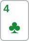

안녕하세요. A23에서 플랍 체크레이즈를 맞은 KK를 봤죠. 상대 레이즈를 이미 앞선 핸드와 드로우 두 묶음으로 나눴고, 드로우도 턴·리버가 남아 있어 에퀴티를 꽤 가진 상대였어요.
오늘은 같은 체크레이즈를 리버에서, 우리가 하는 쪽으로 봐요. 더 나올 카드가 없으니 플랍과는 이야기가 완전히 달라져요. E08에서 배운 밸런스가 여기서 어떻게 쓰이는지도 같이 볼게요.
이 글에서 배울 것
- 리버 체크레이즈가 플랍 체크레이즈와 다른 점: 드로우 묶음이 사라지고 밸류와 순수 블러프만 남는다
- 밸류 체크레이즈의 값은 "벳도 하고 레이즈에 콜도 해 주는 상대 핸드"가 정한다는 것
- 블러프 체크레이즈 후보를 고르는 두 기준: 콜할 수 없는 핸드인가, 어느 묶음을 지우는가
1단계. 리버 체크레이즈는 무엇이 다를까?
한 줄 정의
리버 체크레이즈 = 리버에서 먼저 체크한 뒤, 상대 벳에 레이즈하는 것이에요. 먼저 행동하는 자리(보통 BB)에서 쓰는 수예요.
플랍과 가장 큰 차이: 에퀴티가 없어요
A23의 플랍 체크레이즈에는 드로우가 많이 섞여 있었어요. 드로우는 콜을 받아도 턴·리버에 이길 길이 남아 있었죠.
리버에서는 그 길이 없어요. 레이즈가 콜을 받으면 그 자리에서 쇼다운이에요. 그래서 리버 체크레이즈 레인지는 콜을 받았을 때 대체로 이기는 쪽(밸류)과 콜을 받으면 지는 쪽(블러프)으로 갈라져요. 밸류도 더 센 핸드에 콜을 맞으면 져요. 아래 J8이 레이즈를 못 하는 이유가 바로 그거예요. E08에서 본 바로 그 모양이에요.
비유: 함정과 허세
리버 체크레이즈는 문을 열어 두고 기다리는 것과 비슷해요. 상대가 들어오면(벳하면) 문을 닫아요(레이즈). 진짜 함정일 때는 상대가 크게 잃고, 허세일 때는 상대가 겁먹고 나가야 해요.
이게 무슨 뜻이냐면, 체크레이즈는 상대가 먼저 들어와 줘야 시작조차 안 된다는 거예요. 상대가 체크로 넘기면 함정은 그냥 쇼다운으로 끝나요.
2단계. 한 판을 따라가 보기
오늘의 장면
Hero는 BB, 상대는 BTN. 둘 다 스택이 넉넉해요. BTN이 오픈하고 Hero가 콜했어요.
플랍: J♥ 8♠ 4♣


Hero 체크, BTN 작은 c-bet, Hero 콜.
턴: 2♦

Hero 체크, BTN도 체크.
BTN이 턴에 체크로 넘겼다는 게 중요해요. 셋이나 투페어처럼 센 핸드라면 턴에도 벳해서 팟을 키우고 싶었을 수 있어요. 그래서 BTN의 레인지는 J 페어 같은 중간 핸드와 포기한 핸드 쪽으로 기울 수 있어요. 다만 센 핸드를 일부러 체크하는 상대도 있으니 "기울 수 있다" 정도로만 봐요.
리버: 6♥


Hero 체크, BTN이 팟의 절반쯤 벳해요.
이 보드에서 가장 강한 핸드는 75예요. 4-5-6-7-8 스트레이트죠. 하트는 J♥·6♥ 두 장뿐이라 플러시는 없어요. 그다음이 53으로 만든 2-3-4-5-6 스트레이트, 그다음이 셋(JJ·88·66·44·22), 그다음이 투페어예요.
Hero가 7♥5♥를 들었다면: 밸류 체크레이즈
Hero는 플랍에 6만 오면 되는 드로우로 따라왔고, 리버에 넛 스트레이트가 됐어요.
레이즈하면 누가 콜해 줄까요? BTN이 벳한 핸드 중 J 페어는 레이즈에 접기 쉬워요. 콜해 줄 수 있는 건 턴에 숨긴 셋·투페어, 그리고 J 페어 중 좋은 키커로 버티는 핸드예요. 이 핸드들이 있을 수 있다면 체크레이즈가 체크-콜보다 더 받아 와요.
Hero가 J♠8♦를 들었다면: 체크-콜
투페어예요. 센 핸드지만 레이즈하면 이야기가 달라져요. 레이즈에 콜해 줄 BTN 핸드 중 J 페어는 접고, 콜하는 건 셋과 75·53 스트레이트처럼 Hero를 이기는 핸드가 많아요.
그래서 J8은 레이즈보다 체크-콜이 자연스러워요. 벳한 J 페어와 블러프에게서는 콜로 받고, 더 센 핸드에게는 콜 한 번만 내주는 거예요.
Hero가 9♠7♠를 들었다면: 블러프 후보, 그런데 조심
플랍에 T만 오면 되는 드로우였는데 빗나갔어요. 9 하이라 BTN의 벳 레인지 어떤 핸드에도 거의 다 져요. 콜할 수 없는 핸드예요. 그러면 선택은 폴드 아니면 레이즈 블러프예요.
7은 BTN의 넛 핸드인 75를 지워요. 레이즈에 절대 안 접을 핸드를 줄이니 도움이 돼요. 그런데 9는 BTN이 블러프로 벳했을 법한 T9(빗나간 드로우)를 지워요. 이건 레이즈에 접어 줄 핸드를 줄이니 손해예요. E20에서 본 것처럼 블로커는 콜 묶음을 지우는지, 폴드 묶음을 지우는지를 나눠 봐야 해요.
3단계. 원칙끼리 부딪칠 때
"넛은 체크레이즈로 가장 많이" vs "체크하면 상대가 안 걸 수도 있다"
체크레이즈는 상대가 벳해야 시작돼요. BTN이 J 페어로 리버에 얇게 벳하는 사람이라면 체크레이즈가 앞서요. 반대로 체크로 받은 판은 그대로 쇼다운으로 가져가는 사람이라면, 75로 체크했다가 한 푼도 못 받고 끝날 수 있어요.
이게 무슨 뜻이냐면, 넛으로 체크레이즈할지 먼저 벳할지는 "이 상대가 체크를 받으면 벳하는 사람인가"가 정한다는 거예요.
"밸런스를 위해 블러프도 섞어야" vs "리버 블러프 레이즈는 에퀴티가 없다"
E08에서 밸류만 있는 벳은 상대가 다 접으면 그만이라고 했죠. 체크레이즈도 같아요. 밸류만 체크레이즈하면, 상대는 우리 레이즈에 센 핸드가 아니면 다 접으면 돼요.
그런데 섞을 수 있는 블러프 수는 밸류 수가 정해요. 오늘 BB의 밸류 체크레이즈 후보는 셋(66·44·22)과 스트레이트(75·53)인데, 가장 센 스트레이트는 BB가 플랍을 드로우로 따라와야 생겨서 적어요. 밸류가 많지 않으니 블러프 자리도 좁아요. 그래서 리버 체크레이즈 블러프는 블로커가 콜 묶음을 확실히 지울 때만 꺼내는 얇은 수예요.
뒤집히는 상대
- 얇은 밸류를 많이 걸고 레이즈에 잘 콜하는 상대: 밸류 체크레이즈의 폭이 넓어져요. J8 같은 투페어도 레이즈 후보로 올라올 수 있어요
- 블러프를 많이 거는 상대: 레이즈하면 그 블러프가 다 접어요. 넛이라도 체크-콜로 블러프의 벳을 받는 쪽이 나을 수 있어요
- 레이즈에는 넛만 남기는 상대: 블러프 체크레이즈가 잘 통할 수 있지만, 밸류 레이즈는 콜을 못 받아요
"쇼다운 가치가 있으면 블러프하지 않는다" vs "벳을 맞으면 그 가치가 사라진다"
리버 체크레이즈 블러프를 다룬 글 중에는 체크로 넘어가면 쇼다운에서 이겼을 핸드를 블러프 후보로 꼽는 글도 있어요(아래 더 읽어 볼 글 첫째). 아래 실수 2와 정반대로 들리죠.
차이는 쇼다운 가치를 언제 재느냐예요. 오늘 장면에서 Hero가 4♥3♥(4 페어)라고 해 볼게요. BTN이 체크로 넘겼다면 포기한 T9·Q 하이에는 이겨요. 그런데 BTN이 벳했고, 그 벳이 J 페어 같은 얇은 밸류 위주에 블러프가 적다면 4 페어로는 콜할 수 없어요. 벳을 맞은 순간 쇼다운 가치가 사라진 거예요. 그 J 페어가 레이즈에 접는 사람이라면, 4 페어는 9♠7♠와 같은 자리의 블러프 후보가 돼요.
반대로 BTN이 블러프를 많이 섞는 사람이라면 4 페어는 그 블러프를 콜로 잡는 핸드예요. 이게 무슨 뜻이냐면, 기준은 "체크로 끝났으면 이겼나"가 아니라 "이 벳을 맞고 나서도 콜할 수 있나"라는 거예요.
4단계. 레이즈 크기 한 가지만
리버 레이즈 뒤에는 더 올 카드가 없어요. 그래서 크기는 두 번째 거름에서 남길 핸드로 정해요. 밸류 레이즈는 크게 할수록 한 번에 많이 받지만 콜해 줄 핸드가 줄어요. 블러프는 E20에서 본 것처럼 클수록 성공해야 하는 횟수가 늘어나니, 밸류와 같은 크기로 섞어 상대가 크기만 보고 구별하지 못하게 해요.
왜 그럴까: 체크레이즈는 상대 레인지를 두 번 거르는 수라서
첫 번째 거름: 상대가 벳하나
우리가 체크하면 상대 레인지가 벳하는 묶음과 체크하는 묶음으로 나뉘어요. 체크레이즈는 벳한 묶음만 상대해요. 체크한 묶음에게서는 아무것도 못 받아요.
두 번째 거름: 레이즈에 콜하나
레이즈하면 벳한 묶음이 다시 콜하는 쪽과 접는 쪽으로 나뉘어요. 밸류 체크레이즈는 콜하는 쪽에서 이겨야 돈이 되고, 블러프 체크레이즈는 접는 쪽이 넉넉해야 돈이 돼요.
그래서 두 번 다 살아남는 핸드를 봐요
밸류 체크레이즈의 값은 "벳도 하고, 레이즈에 콜도 하는데, 우리에게 지는 핸드"가 얼마나 있느냐예요. 두 번 거른 뒤에도 그런 핸드가 남으면 레이즈, 안 남으면 체크-콜이에요. J8이 레이즈를 못 한 이유는 두 번째 거름에서 우리보다 센 핸드만 남기 때문이었어요.
자주 하는 실수
실수 1. "센 핸드니까 체크레이즈" J8 투페어도 센 핸드였지만, 레이즈하면 J 페어는 접고 셋·75만 콜해서 오히려 손해 보는 모양이었어요. 핸드가 세다는 느낌보다 레이즈에 콜해 줄 핸드 중 내가 이기는 게 남는지를 먼저 봐요.
실수 2. 이 벳에 아직 콜할 수 있는 핸드로 블러프 레이즈 상대 벳에 블러프가 넉넉히 섞여 있어 콜로 잡을 수 있는 핸드라면, 레이즈해서 그 블러프를 접게 하는 건 이기던 판을 버리는 일이에요. 블러프 레이즈는 9♠7♠처럼 벳을 맞은 순간 콜할 수 없게 된 핸드에서 골라요.
실수 3. 플랍 체크레이즈처럼 블러프를 넉넉히 섞기 A23의 플랍 체크레이즈에서는 드로우가 에퀴티를 들고 있어 레이즈 레인지가 두터웠어요. 리버 블러프는 콜을 받으면 늘 져요. 그래서 리버에서는 밸류 수에 맞춰 블러프를 좁게 섞어요.
"체크레이즈 말고 그냥 리버에 먼저 벳하면 안 돼요?"
좋은 질문이에요. 될 때가 많아요. 먼저 벳하면 상대가 체크로 넘길 위험이 없고, 상대는 콜하거나 접는 결정만 하면 돼요. 상대가 체크를 받으면 얌전히 쇼다운으로 가는 사람이라면 먼저 벳하는 쪽이 더 받을 수 있어요.
체크레이즈가 앞서는 건 상대가 체크를 받으면 벳을 잘 하는 사람이고, 그 벳한 핸드 일부가 레이즈에도 콜해 줄 때예요. 그러니 "체크레이즈냐 먼저 벳이냐"는 우리 핸드보다 상대가 체크를 받았을 때 하는 행동을 기억해 두는 게 먼저예요.
선생님의 한마디
리버에 체크했는데 상대가 벳해 오면 이 순서로 봐요.
- 이 벳에 콜할 수 있나? 콜할 수 있으면 레이즈 전에 체크-콜부터
- 레이즈하면 누가 남나? 남는 핸드 중 내가 이기는 게 있으면 밸류 레이즈
- 콜할 수 없는 핸드라면 블로커가 콜 묶음을 지우는지, 폴드 묶음을 지우는지 확인
연습 문제
문제 1. Hero는 BB, 상대는 CO예요. 보드는 Q♣ 9♦ 5♠ 3♥ 2♣. Hero는 플랍·턴을 체크-콜했고 리버에 체크했어요. CO가 큰 벳을 해 왔어요. Hero는 Q♦9♣ 투페어예요. 이 CO는 이런 사람이에요.
- Q 페어 이상이면 키커와 상관없이 리버에 크게 걸고, 블러프는 거의 없어요
- 레이즈를 받으면 셋·스트레이트는 다시 올리고, Q 페어는 작은 레이즈에는 콜, 큰 레이즈에는 폴드해요
(가) 체크-콜과 체크레이즈 중 무엇을 고를까요? (나) 레이즈한다면 크기는요? (다) 레이즈했는데 CO가 다시 올리면요?
정답 보기
(가) 체크레이즈예요. 첫 번째 거름(벳)을 지난 CO 레인지는 Q 페어·셋·스트레이트(A4의 A-2-3-4-5, 64의 2-3-4-5-6)예요. 두 번째 거름(레이즈)에 콜로 남는 Q 페어(AQ·KQ·QJ·QT 등)는 Hero가 다 이겨요. 두 번 거른 뒤 이기는 핸드가 남으니 밸류 레이즈예요.
(나) 작게. 크게 올리면 Q 페어가 접고 다시 올릴 셋·스트레이트만 남아요. Q 페어가 콜할 수 있는 크기여야 레이즈가 돈이 돼요.
(다) 폴드 쪽이에요. 이 CO의 다시 올리기는 셋·스트레이트뿐이라, 투페어로는 이길 핸드가 없어요.
문제 2. Hero는 BB, 상대는 BTN. 보드는 K♠ T♠ 6♦ 3♣ 2♠. 리버에 스페이드가 깔려 플러시가 완성됐어요. Hero가 체크하자 BTN이 벳해 왔어요. Hero는 아래 두 핸드 중 하나라고 해요. 둘 다 BTN 벳에 콜하기는 어려운 핸드예요. 블러프 체크레이즈 후보로 어느 쪽이 더 나은가요?
- (가) A♠4♦: 스페이드가 없는 A 하이에 A♠ 한 장
- (나) Q♦J♦: 턴까지 A나 9를 기다리던 드로우가 빗나간 Q 하이
정답 보기
(가) A♠4♦가 더 나아요. A♠는 BTN이 레이즈에 절대 안 접을 넛 플러시를 지워요. 콜 묶음을 줄이는 블로커예요.
(나) Q♦J♦는 BTN이 블러프로 벳했을 법한 QJ·Q9·J9 같은 빗나간 드로우를 지워요. 이 핸드들은 레이즈에 접어 줄 폴드 묶음이라, 지우면 오히려 레이즈가 덜 통해요. 같은 "콜할 수 없는 핸드"라도 어느 묶음을 지우느냐로 블러프 후보의 순서가 갈려요. 다만 어느 쪽이든 BB의 리버 넛이 적다면 블러프 레이즈 자체를 아껴요.
핵심 정리
- 리버 체크레이즈 레인지는 콜을 받으면 대체로 이기는 밸류와 콜을 받으면 지는 블러프로 갈라져요. 플랍처럼 에퀴티를 가진 드로우가 없어요
- 쇼다운 가치는 "체크로 끝났으면"이 아니라 "이 벳을 맞고도 콜할 수 있나"로 재요
- 체크레이즈는 상대 레인지를 벳하나, 레이즈에 콜하나로 두 번 걸러요. 두 번 거른 뒤 우리가 이기는 핸드가 남아야 밸류 레이즈예요
- 넛이라도 상대가 체크를 받고 벳하지 않으면 체크레이즈는 시작되지 않아요. 먼저 벳하기와 늘 비교해요
- 블러프 후보는 콜할 수 없는 핸드 중에서, 블로커가 콜 묶음을 지우는 핸드를 골라요
- 섞을 블러프 수는 밸류 수가 정해요. 넛이 적은 쪽은 블러프 레이즈도 좁게
정리하며
오늘은 J♥8♠4♣2♦6♥ 리버에서 BB가 체크한 뒤 BTN 벳을 받는 장면으로, 넛 75는 레이즈, 투페어 J8은 체크-콜, 빗나간 97은 블로커를 따져 보는 블러프 후보로 나눴어요. 리버 체크레이즈는 상대 레인지를 두 번 거르는 수라, 핸드 세기보다 두 번째 거름 뒤에 누가 남느냐가 답을 정했죠. 그리고 그 수는 상대가 체크를 받으면 벳하는 사람이어야 비로소 시작돼요.
다음 글 P10에서는 스택이 아주 깊은 판에서 처음부터 계획을 세우는 법을 다뤄요. 오늘은 리버 한 번의 결정이었다면, 다음 글은 프리플랍부터 리버까지 이어지는 긴 판의 설계예요.
더 읽어 볼 글
- Which hands to check/raise the river? — 밸류는 상대 벳 레인지를 덜 지우는 핸드로, 블러프는 체크로 넘어가면 쇼다운에서 이겼을 핸드 중 상대 센 핸드를 지우는 것으로 고르고, 실전에서는 드물게 쓰라는 정리. 본문 실수 2와 반대로 보이는 부분은 3단계 마지막 절에서 "벳을 맞은 뒤에도 콜할 수 있나"로 따져 봤어요
- Check-raise strategy: when to fire, how big, and the trap — 스트리트별 체크레이즈 쓰임을 정리하면서, 리버에서는 드로우가 없어 블러프에 에퀴티가 없다는 점을 짚은 글
AI 작성 · 원칙 설명, 수치 없음 · 외부 글은 요약 링크